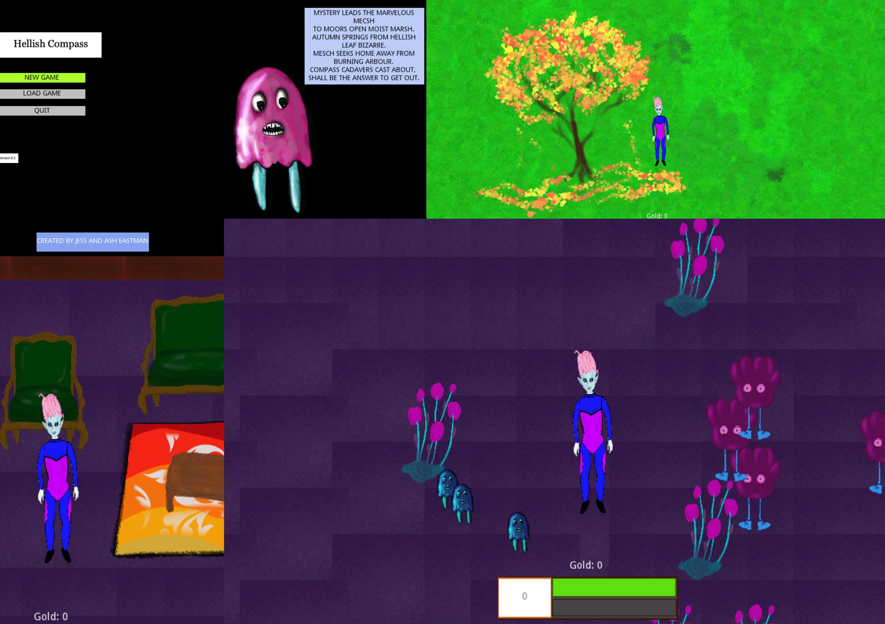

This game was created for the RNGGAME JAM 2 four years ago using the Godot game engine in collaboration with my sister Ashley. The premise is that you are an alien that has crash landed on Earth. You must find the pieces of your compass and return to your home, which is among your nomadic alien race that travels through space. It is free to play in your web browser on itch.io.

Jessica completed her PhD in quantum physics at the Australian National University in 2020, with a thesis titled "The emergence of chaos in continuously monitored open quantum systems". She worked as a research associate in Non Hermitian and PT Symmetric quantum chaos at Imperial College London for four years. She is now a research Fellow at ANU, where she is working on quantum sensing and many body physics.